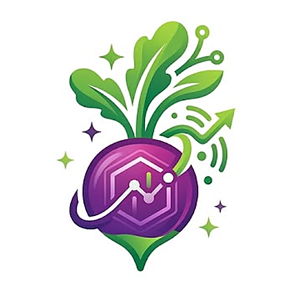

Destek
Bir sorun mu yaşıyorsunuz veya öneriniz mi var? GitHub üzerinden bize yazın. Mesajınızda iOS sürümünüzü ve mümkünse taradığınız adresi belirtin.
Sık sorulan sorular
Uygulama açıkken kontroller seçtiğiniz sıklıkta yapılır. Uygulama arka plandayken iOS, pil ve ağ durumuna göre kontrolün ne zaman yapılacağına kendisi karar verir; bu genellikle en sık 15 dakikada birdir. Arka planda süre kısıtlı olduğu için hızlı kontrol yapılır.
Tam kontrol, ayarladığınız sayfa limitine kadar tüm siteyi tarar. Hızlı kontrol ilk 10 sayfayı, sertifikayı ve güvenlik başlıklarını kontrol eder. Her kontrol yalnızca aynı türdeki önceki kontrolle karşılaştırılır.
MonSite sayfaların HTML içeriğini okur. JavaScript ile sonradan oluşturulan bağlantılar ve içerikler görünmeyebilir.
Herkese açık kalmış .git, .env ve yedek dosyaları gibi yaygın açıkları arayan isteğe bağlı bir kontroldür. Varsayılan olarak kapalıdır; yalnızca size ait veya test izniniz olan sitelerde açın.
Tüm sonuçlar yalnızca cihazınızda saklanır. Ayrıntılar için gizlilik politikasına bakın.
Support (English)
Having an issue or a suggestion? Contact us on GitHub. Please include your iOS version and, if possible, the address you scanned. All scan data stays on your device — see the privacy policy.